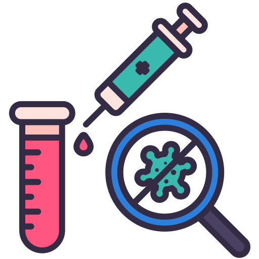

Protocolos e Técnicas de Tratamento
Covid-19: O Que é?
A Covid-19 é uma infecção respiratória agudacausada pelo coronavírus SARS-CoV-2,potencialmente grave, de elevadatransmissibilidade e de distribuição global.
O SARS-CoV-2 é um betacoronavírus descoberto em amostras de lavado broncoalveolar obtidas de pacientes com pneumonia decausa desconhecida na cidade de Wuhan, província de Hubei, China, em dezembro de 2019. Pertence ao subgênero Sarbecovírus dafamília Coronaviridae e é o sétimo coronavírus conhecido a infectar seres humanos.
Sintomas
A COVID-19 afeta diferentes pessoas de diferentes maneiras. A maioria das pessoas infectadas apresentará sintomas leves a moderados da doença e não precisarão ser hospitalizadas.
- Sintomas mais comuns:
- febre
- tosse seca
- cansaço
- Sintomas menos comuns:
- dores e desconfortos
- dor de garganta
- diarreia
- conjuntivite
- dor de cabeça
- perda de paladar ou olfato
- erupção cutânea na pele ou descoloração dos dedos das mãos ou dos pés
- Sintomas graves:
- dificuldade de respirar ou falta de ar
- dor ou pressão no peito
- perda de fala ou movimento
Procure atendimento médico imediato se tiver sintomas graves. Sempre ligue antes de ir ao médico ou posto de saúde, clínicas ou hospitais.
Saiba mais em OMS - CoronavirusTrasmissão
A transmissão costuma ocorrer pelo ar ou por contato pessoal com secreções contaminadas, como:
- Gotículas de saliva;
- Espirro;
- Tosse;
- Catarro;
- Contato pessoal próximo, como toque ou aperto de mão com pessoa infectada;
- Contato com objetos ou superfícies contaminadas, seguido de contato com a boca, nariz ou olhos.
Proteja-se!
Lave suas mãos com frequência. Use sabão e água ou álcool em gel.
Use máscara sempre que sair de casa.
Evite aglomerações.
Evite tocar olhos, nariz ou boca.
Cubra seu nariz e boca com o braço dobrado ou um lenço ao tossir ou expirar.
Sempre que possível fique em casa.
Procure atendimento médico se tiver febre, tosse ou dificuldade para respirar.
Novos Medicamentos
Soro desenvolvido no Brasil
O soro, um líquido injetável rico em anticorpos contra o coronavírus, é destinado a pessoas já infectadas e busca frear o agravamento da doença, impedindo por exemplo que ela ataque o pulmão.
Os testes com cobaias tiveram resultados "extremamente" efetivos, segundo o Butantan.
Antiviral inicia testes
Segundo a empresa, o antiviral mostrou uma ação "potente" em testes in vitro no laboratório e é projetado para ser usado aos primeiros sintomas de covid-19.
O medicamento da Pfizer é do tipo inibidor de protease — uma enzima essencial para o vírus se multiplicar.
Coquetel: metas atingidas na terceira fase
O coquetel, uma combinação das substâncias casirivimab e imdevimab com aplicação intravenosa, configura um tipo de tratamento chamado de anticorpos monoclonais — quando anticorpos de uma pessoa que se recuperou da doença são selecionados e copiados em laboratório.
Antiviral pode acelerar eliminação do vírus
as farmacêuticas MSD e Ridgeback apresentaram resultados preliminares de um ensaio clínico em fase 2 com o antiviral oral molnupiravir, envolvendo 202 pessoas infectadas com o coronavírus nos Estados Unidos e não hospitalizadas.
Saiba mais em BBC - novos tratamentos em testes contra a covid-19Tratamentos
Cientistas do mundo todo estão trabalhando para encontrar e desenvolver tratamentos para a COVID-19.
Os tratamentos paliativos mais indicados incluem oxigênio, para casos mais graves e pacientes de alto risco devido a outras doenças, e suportes respiratórios, como ventilação, para pacientes em estado crítico.
A Dexametasona é um corticosteroide que pode ajudar a reduzir o tempo de ventilação e salvar as vidas de pacientes em situação mais grave.
A OMS não recomenda a automedicação, incluindo ingestão de antibióticos, como prevenção ou cura da COVID-19.

Hospitais
- Hospital Municipal - R. Saigiro Nakamura, 800 - Vila Industrial, São José dos Campos
- Hospital de Clínica Sul - Praça Natal, 55 - Parque Industrial, São José dos Campos
UBS's
- Eugênio de Melo - Rua Eugênio Augusto de Melo, 101, Eugênio de Melo
- Novo Horizonte - Rua Tancredo Neves, 5120, Novo Horizonte
- UPA Alto da Ponte - Rua Alziro Lebrão, 76, Alto da Ponte
- São Francisco Xavier - Rua 15 de Novembro, s/n, distrito de São Francisco Xavier (Estrada Pedro David)
- Campo dos Alemães - Rua João Batista do Nascimento, 359, Campos dos Alemães
- Putim - Avenida João Rodolfo Castelli, 1035, Putim
Quem esteve em países com casos confirmados da doença e apresentar sintomas suspeitos deve.
- Evitar contato com outras pessoas
- Procurar um serviço médico imediatamente
- Seguir os cuidados recomendados